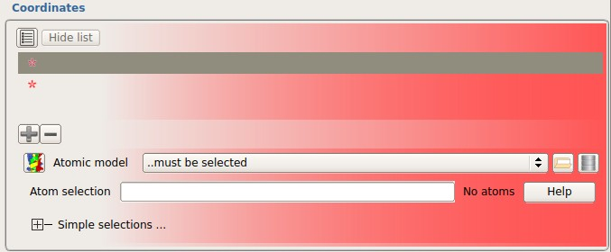
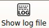

Molecular Replacement
Introduction
This practical is closely based on the tutorials written by Airlie McCoy, the author of PHASER and slightly modified to make use of the ccp4i2 GUI.
During the practical you will learn 1) how to use ensembling to construct a search model, 2) how to solve a heterodimeric complex and 3) how to solve a homo-oligomer from a monomer
0. Getting Started with CCP4 GUI2
-
Launch ccp4i2 by double clicking on the icon on the desktop
-
You will be presented with a "Welcome" screen. Click on the link to "Start a new crystallography project"
-
In the "Name of project/folder" field, enter MR. Click the "Select Directory" button and browse to /home/crystal/MR
-
A "Project Viewer" window will open for project MR
1. MR using ensemble search models: TOXD
α-Dendrotoxin (TOXD, 7139Da) is a small neurotoxin from green mamba venom. You have two models for the structure. One is in the file 1BIK.pdb, which contains the protein chain from PDB entry 1BIK, and the other is in the file 1D0D_B.pdb, which contains chain B from PDB entry 1D0D. 1BIK is the structure of Bikunin, a serine protease inhibitor from the humaninter-α-inhibitor complex, with sequence identity 37.7% to TOXD. 1DOD is the complex between tick anticoagulant protein (chain A) and bovine pancreatic trypsin inhibitor (BPTI, chain B). BPTI has a sequence identity of 36.4% to TOXD. Note that models making up an ensemble must be superimposed on each other, which has not yet been done with these twostructures.
1.1 Generate an ensemble for PHASER by superimposing two or more pdb files
-
From the "Task Menu" select the "Bioinformatic including model preparation for Molecular Replacement" section and launch the "Build an ensemble for PHASER" task.
-
In the "Coordinates" section there are two fields marked with red stars that you can fill with pdb files.
- Select the first of the empty fields. The section should now look like the
figure below.

- Click on the File Browser icon and select the coordinate file 1BIK.pdb
- Select the second empty field.
- Click on the File Browser icon and select the coordinate file
1D0D_B.pdb
-
In the section "Sequence identity to place in header" enter 37.0
-
Run the Task.
1.2 Run PHASER for Molecular Replacement
-
From the "Task Menu" in ccp4i2, select the "Molecular Replacement" section and launch the "Expert Mode Molecular Replacement - PHASER" task
-
In the section marked "Reflections" you will need to import an mtz file since this project does not yet contain any reflections. Click the file browser icon and select the file toxd.mtz. You can accept the defaults you are offered when importing these data.
- In the section marked "Use Is or Fs" select F. It is often preferable to use Is, but this data file only contains Fs.
- We need to specify the Composition of the asymmetric unit of our crystal to the best of our understanding. We will do this by specifying a sequence file for TOXD.
- In the "Composition" section, click the "Specify crystal contents" button.
- Click on the "Browse for sequence file" button and select the file
toxd.seq. You can accept the defaults offered to you when importing the sequence.
- Click the "Save" button.
-
In the section marked "Search Model(s)" you will need to select the merged ensemble from the two structures you superimposed in section 1.1. The output from this task will probably have been selected for you by default, but if not select it from the drop-down menu in this section. In the "Sequence identity" field, enter 0.37.
-
Run the job
1.3 Inspect the Output from the Molecular Replacement Job
- Open the "Results" tab for the job you have just run.
-
There are a number of nested lists containing a great deal of information about the job that has just run. Use this information and your knowledge of molecular replacement to complete the following tasks:
- Write down the steps of structure solution in the order in which they
were taken. The section "Search strategy employed by PHASER" should be helpful here.
- Find the pieces of information listed in Table 1 (located at the end of
this practical sheet) in the log file. You can view the log file by using the "Show log file" button in the main toolbar.

- Has PHASER solved the structure?
2. Solving a heterodimeric complex using MR: BETA/BLIP
β-Lactamase (BETA, 29kDa) is an enzyme produced by various bacteria, and is of interest because it is responsible for penicillin resistance, cleaving penicil in at the β-lactam ring. There are many small molecule inhibitors of BETA in clinical use, but bacteria can become resistant to these as well . Streptomyces clavuligerus produces beta-lactamase inhibitory protein (BLIP, 17.5kDa), which has been investigated as an alternative to small molecule inhibitors, as it appears more difficult for bacteria to become resistant to this form of BETA inhibition. The structures of BETA and BLIP were originally solved separately by experimental phasing methods. The crystal structure of the complex between BETA and BLIP has been a test case for molecular replacement because of the difficulty encountered in the original structure solution. BETA, which models 62% of the unit cell , is trivial to locate, but BLIP is more difficult to find. The BLIP component was originally found by testing a large number of potential orientations with a translation function search, until one solution stood out from the noise.
2.1 Consider the MR problem
-
Import the reflection data for BETA/BLIP into your ccp4i2 project.
- In the "Task menu" open the "Import merged data,sequences,alignments or
coordinates" section launch the "Import and split MTZ data into experimental data objects" task.
- Change the job title to something informative. eg. "Import and Split beta_blip
reflection data"
- In the section marked "Experimental data" click on the file browser icon and
select the file beta_blip_P3221.mtz
- Click the button to "Select all Importable". There is only one object in this mtz file... but this is still a good way to do your selections in general.
- Run the task.
-
What spacegroup is reported by the mtz file? You can right-click on "Reflections" in the Output Data section of the Report tab and select "View in viewHKL" to view information about reflection datasets.
-
If this structure had not already been solved, would you know that this was the space-group? If not, what other space-group(s) must you consider? Consider handedness and possible enantiomorphs.
2.2 Run PHASER for Molecular Replacement
-
From the "Task Menu" in ccp4i2, select the "Molecular Replacement" section and launch the "Expert Mode Molecular Replacement - PHASER" task
-
In the "Use data from job" section, select the "Import..." job that you ran in section 2.1
-
In the section marked "Composition" you need to describe the likely contents of the asymmetric unit - in this case we expect to find one copy each of BETA and BLIP.
- In the "Composition" section click the "Specify crystal contents" button.
- Click the "Browse for sequence file" button and select the sequence file
beta.seq. Make sure that the "Number of copies in asymmetric unit" is set to 1 for this sequence.
- Click the "+" button to add an additional sequence.
- Click the "Browse for sequence file" button and select the sequence file
blip.seq. Make sure that the "Number of copies in asymmetric unit" is set to 1 for this sequence.
- We have now specified one copy of each of the two sequences. Click "Save"
to return to the main Phaser interface.
-
You must now define the search model(s). This time we will be searching for one ensemble after another (each containing a single model) instead of using a single ensemble containing multiple models.
- In the section marked "Search model(s)" click on the "Show list" button. The
first ensemble will be selected by default, but will be populated with an incorrect model (it will have assumed that we are still working with the same model as in section 1).
- Click on the file browser icon alongside the atomic model selection and select
the file beta.pdb. In the sequence identity box enter 1.0
- Click on the "+" icon and select "Add ensemble" from the options presented.
- Select the model field for Ensemble 2. Click on the file browser icon
alongside the atomic model selection and select the file blip.pdb. In the sequence identity box enter 1.0
- Select the first ensemble (the ensemble itself rather than the model it
contains). Ensure that you will be searching for 1 copy of this ensemble and give the ensemble the name "BETA".
- Repeat the last step for the second ensemble but give it the name "BLIP"
- Run the task
2.3 Inspect the Output from the Molecular Replacement Job
-
Open the Results tab for the job you have just run. Use the information here and your knowledge of Molecular Replacement to complete the following tasks:
- Write down the steps in the structure solution in the order in which they were
taken. How are these steps different from the TOXD example?
- Find the pieces of information listed in Table 1
- Which space group is the solution in? Which other space groups were tested
(if any)? The first translation function search would be the best place to look for this.
- Why doesn't Phaser perform the rotation function in the two enantiomorphic
space groups?
- Which reflections in the data are particularly important for deciding the
translational symmetry of the space-groups to search? Under what data collection conditions might you not have recorded these important reflections? Are there any other space-groups that you might want to consider when solving BETA/BLIP?
- How big is the anisotropic correction for the data? How does this compare to
TOXD?
- Has PHASER solved the structure?
3. Advanced
If you have time revisit the TOXD and BETA-BLIP examples and look at the following exercises. These should help you understand how the choices you made in the worked examples influence the outcome of Molecular Replacement.
3.1 TOXD
-
Run PHASER again without using ensembling, using just 1BIK or 1D0D as a search model. What are the LLG values of the final solutions? What are the Z-scores of the translation functions? Was ensembling a good idea?
-
Run PHASER again using the two pdb files before superposition as search models. What does PHASER report?
3.2 BETA-BLIP
Run Phaser again with the anisotropy correction turned off. What effect does this have on the structure solution?
Table 1
| cell content analysis |
probability of input composition |
| anisotropy correction |
anisotropic B-factor |
| translational ncs |
translational ncs vector if any |
| ensembling |
input VRMS of members of the ensemble |
| rotation function |
selection criteria for rescoring fast RF orientations with full RF
number selected for rescoring with full RF
highest RFZ in full RF
final (purging) selection criteria
number selected for TF |
| translation function |
selection criteria for rescoring fast TF positions with full TF
number selected for rescoring with full TF
highest TFZ in full TF
number of TFZ > 8
final (purging) selection criteria
number selected for packing |
| packing function |
number of clashes allowed
number of solutions accepted |
| refinement |
increase in LLG for top solution
refined VRMS
TFZ equivalent |
| automated MR |
resolution for searches |
| decision making |
expected difficulty of search
search order for ensembles (if more than one type)
cutoff selection changes (if any)
amalgamation (if any) |
4. Solving a homo-oligomeric complex: HICA (If you have time)
Carbonic anhydrase is an enzyme that assists rapid inter-conversion of carbon dioxide and water into carbonic acid, protons and bicarbonate ions to aid removal of carbon dioxide from the blood in respiration. This ancient enzyme has three distinct classes; alpha, beta and gamma. Carbonic anhydrase from mammals belong to the alpha class, the plant enzymes belong to the beta class, while the enzyme from methane-producing thermophillic bacteria forms the gamma class. Members of these different classes share very little sequence or structural similarity. The alpha enzyme is a monomer and the gamma enzyme is trimeric. The beta enzyme can be a dimer, tetramer, hexamer or octamer. Haemophilus influenzae β-carbonic anhydrase (HICA,2a8d) is an allosteric protein. The model you have for this structure is E. coli β-carbonic anhydrase, which has 61% sequence identity to HICA. NB. This is a computationally demanding task for a Virtual Machine. Don’t worry if on your particular machine it fails or takes an unacceptably long time to run - try running the same task on a more powerful machine at a later time.
4.1 Consider the MR problem
-
Import the reflection data for HICA into your ccp4i2 project.
- In the "Task menu" open the "Import merged data,sequences,alignments or
coordinates" section launch the "Import and Split MTZ..." task.
- Change the title to something informative, eg. "Import and Split HICA data"
- In the section marked "Experimental data" click on the file browser icon and
select the file fast_2a8d.mtz
- Click the "Select all importable" button
- Run the task.
-
From the Task menu, select the "Reflection data tools" section and launch the "Estimate cell content" task.
- In the section marked "Cell parameters taken from reflection data" select the
reflections from the import data job you just ran.
- In the section marked "Calculate molecular weight from…" click on the
"Specify crystal contents" button.
- Click on the "Browse for sequence file" button and select the sequence file fast_2a8d.seq. Click on the "Save" button.
- The Matthews calculation will be carried out automatically.
- How many monomers of β-carbonic anhydrase can fit in the asymmetric unit?
Which of these possibilities is most probable? Which of these are possible? What are the oligomeric associations that could correspond with the possible asymmetric unit contents? Consider the application of crystal symmetry.
4.2 Run PHASER for Molecular Replacement
-
From the "Task Menu" in ccp4i2, select the "Molecular Replacement" section and launch the "Expert Mode Molecular Replacement - PHASER" task
-
In the "Use data from job" section, select the "Import merged reflection data" job that you ran in section 3.1
-
In the "Composition" section, click on the "Specify crystal contents" button. Click "Browse for sequence file" and select the fast_2a8d sequence. In the field for the number of copies in the asymmetric unit, enter the number of copies you think shouldbe present in the asymmetric unit based on section 3.1
-
In the "Search model(s)" section, you will need to define a single search model but tell PHASER to search for multiple copies of it.
- Click on the file browser icon and select the file fast_1i6p.pdb
- In the "Sequence identity" field enter 0.61
- Tell PHASER to find the same number of copies that you entered in the
"Composition" field above.
-
Run the task (this job will take longer to run - this is normal when there are many copies to find)
4.3 Inspect the Output from the Molecular Replacement Job
-
Write down the steps in the structure solution in the order in which they were taken.
-
Find the pieces of information listed in Table 1
-
Has Phaser solved the structure?
-
How many molecules are there in the asymmetric unit?